Молдинги для стен под покраску: узкие, широкие, для рамок
Молдинги для стен под покраску из полистирола высокой плотности (дюрополимера) — для рамок и панно на стенах, стыка обоев и покраски, зонирования. Ширина от 15 до 96 мм, длина 2 м (A611/3 и A611/4 — 3 м). У A35/2 и A157/2 сзади канал под кабель. Молдинг белый, красится в цвет стены или в контраст; углы запиливаются под 45°, стыки шпаклюются. Цены от 210 ₽ за штуку.
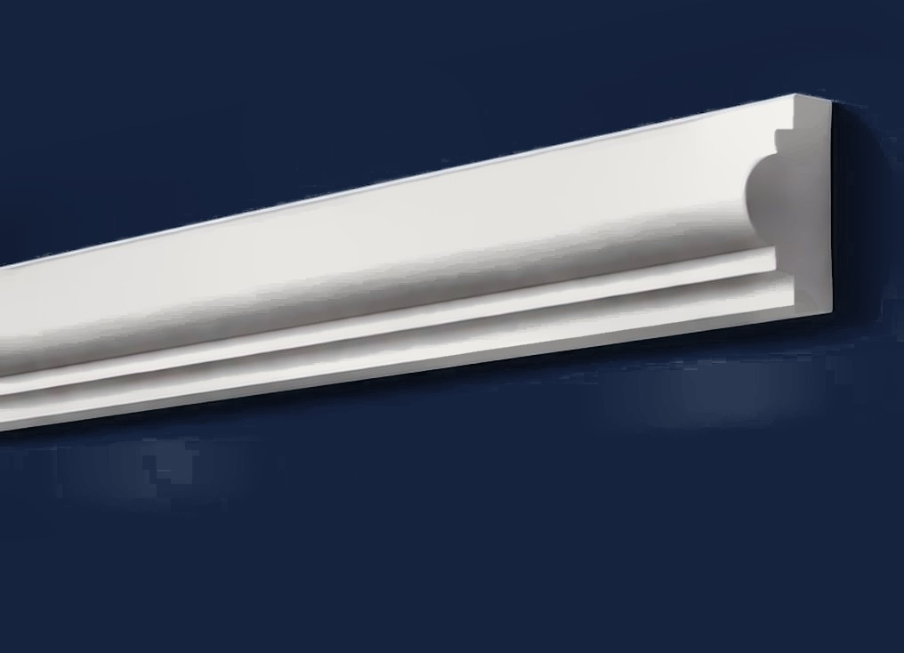
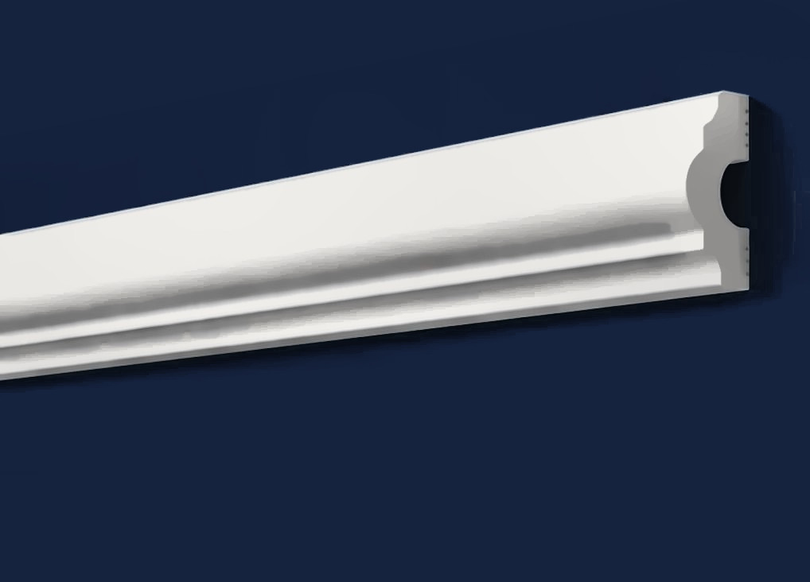


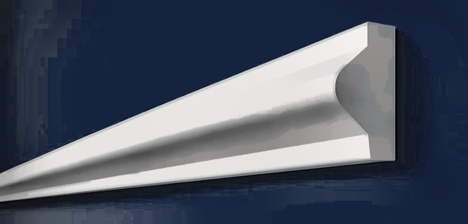

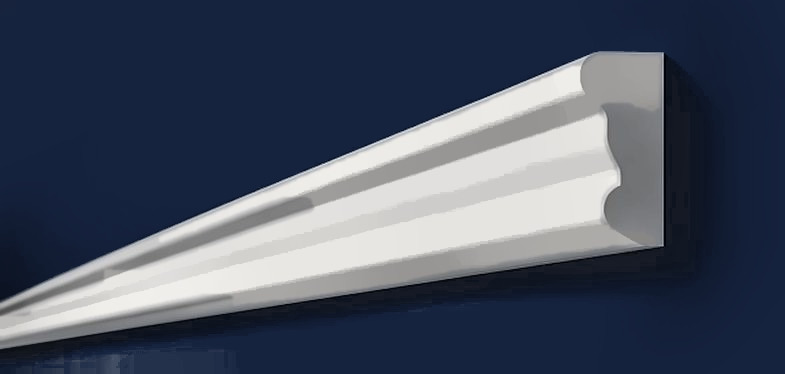
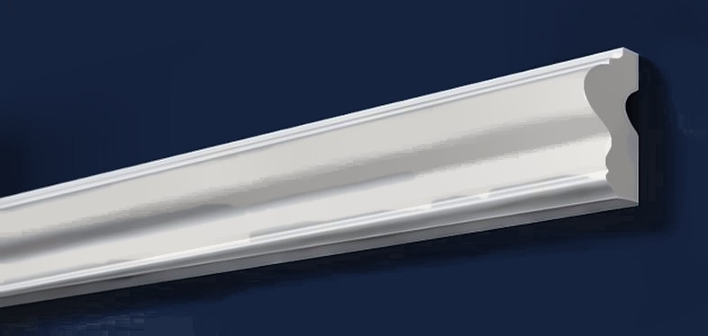
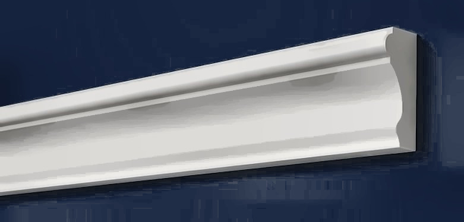
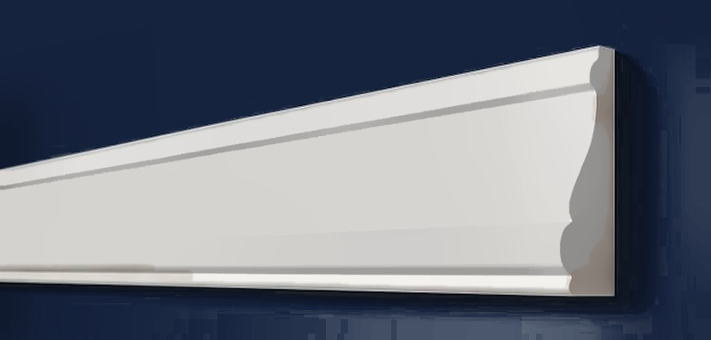
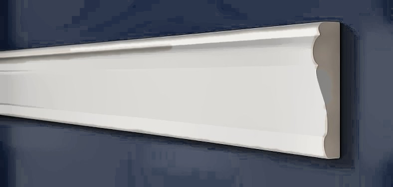
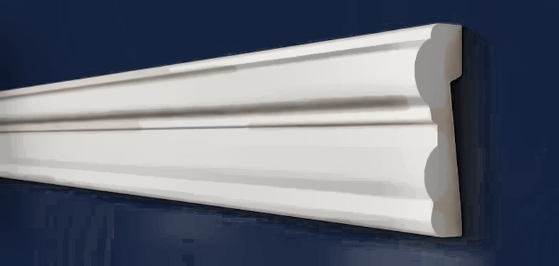
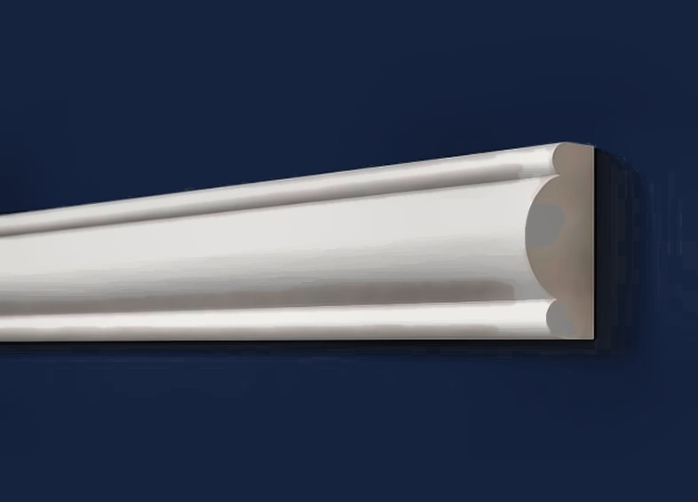
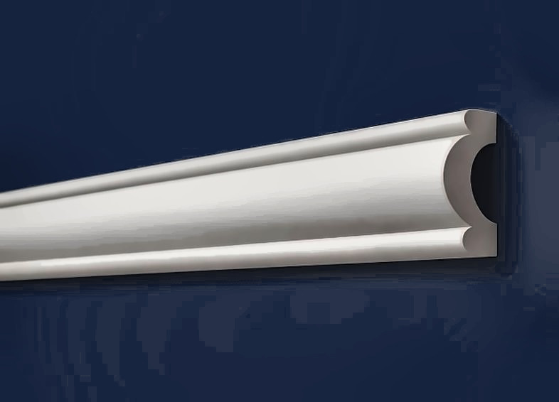
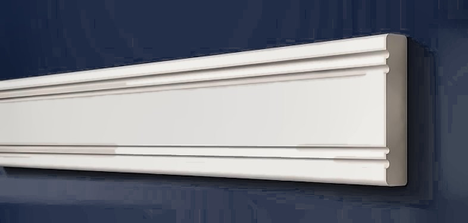
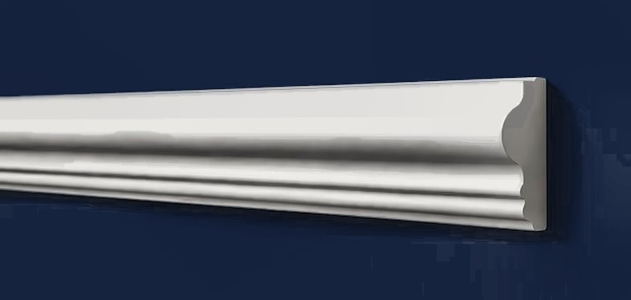
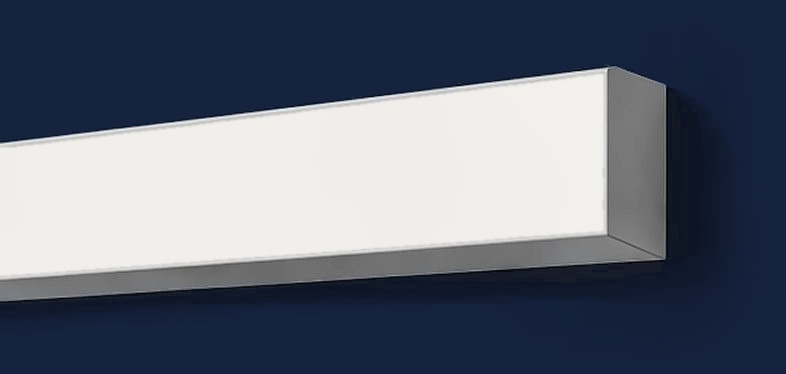
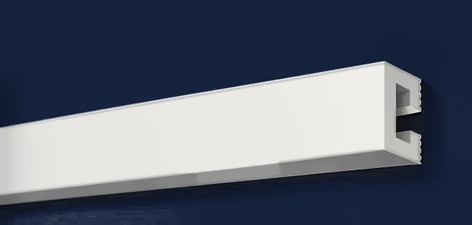
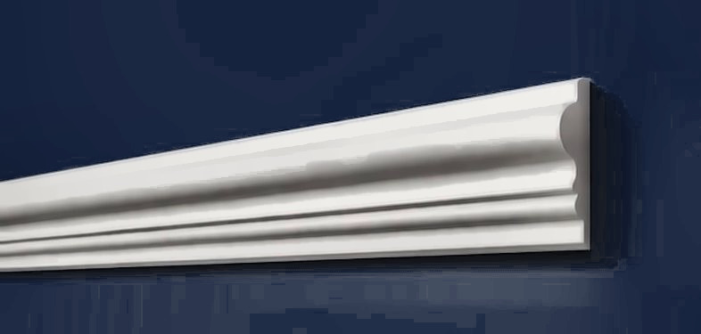

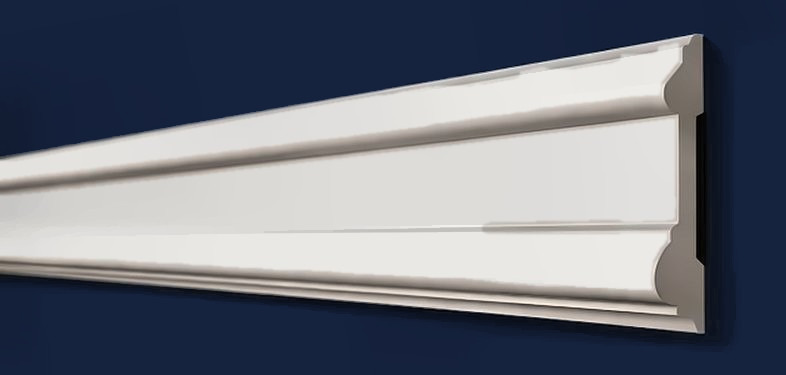
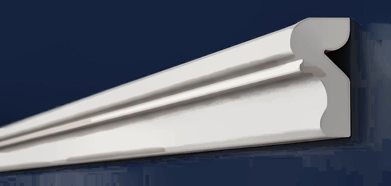
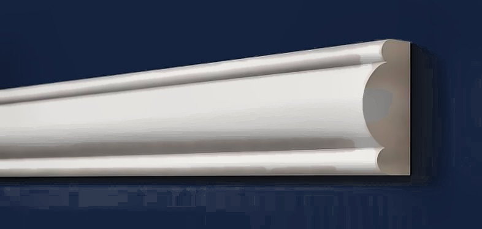
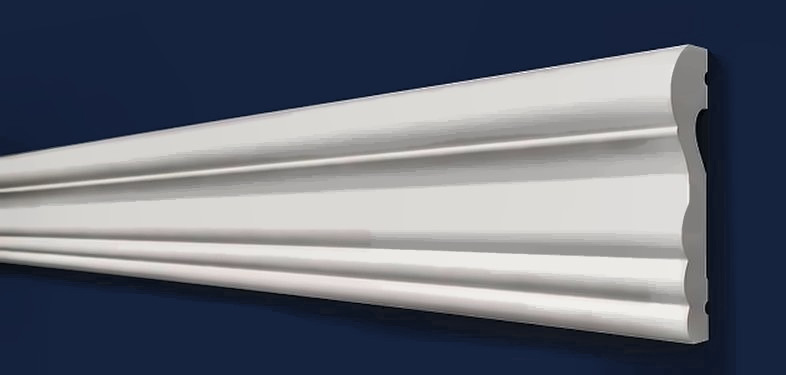

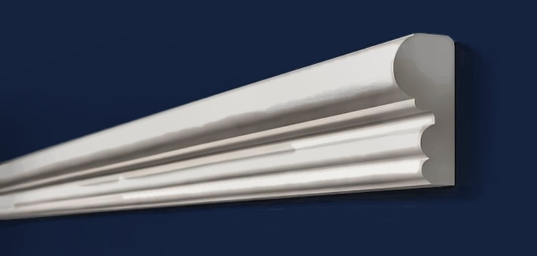
Цены предварительные, за штуку, без НДС. Нажмите на товар — там фото, 3D, профиль, размеры, цена и заявка.
Вопросы и ответы
Как запилить углы молдинга?
Под 45° в стусле ножовкой с мелким зубом; стык промазывается клеем и шпаклюется.
Чем клеить молдинги на стену?
Жидкими гвоздями на водной основе или акриловым монтажным клеем. Клеи с растворителями нельзя. Для рамок на обоях — на клей по обоям, предварительно разметив рамку.
Чем красить молдинги?
Водно-дисперсионной краской для стен — в цвет стены или в контраст. Молдинг белый, под покраску.
Сколько молдинга нужно на рамку?
Периметр рамки плюс запас 10 % на подрезку углов; длина молдинга — 2 м (A611/3 и A611/4 — 3 м).
Есть ли молдинг с кабель-каналом?
Да: A35/2 и A157/2 — сзади канал под кабель, остальное как у A35 и A157.
Заявка
Ответим с ценой, наличием и сроком в рабочее время. Быстрее всего — написать в чат (кнопка «Чат» внизу справа) или заказать обратный звонок — перезвоним сами.
Оставьте номер — перезвоним в рабочее время, расскажем про наличие, цену и доставку. Укажите в комментарии, когда удобно принять звонок.
Менеджер подтвердит наличие и стоимость доставки и пришлёт ссылку на оплату картой или через СБП — оплата до отгрузки, электронный чек придёт на e-mail. Компаниям и ИП — счёт. Самовывоз со склада в СПб — бесплатно. Об оплате и возврате